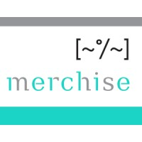

Senior Backend Engineer with 9+ years of expertise in Python, AWS event-driven systems, and workflow orchestration. Proven track record building production-grade data pipelines, microservices, and third-party integrations — including ServiceNow, SQS/EventBridge automation, and Airflow-based ETL systems. Experienced technical leader in Agile teams with a strong foundation in clean-code principles, observability, and end-to-end DevOps ownership. Adept at translating complex operational workflows into reliable, scalable backend services.
- Lambda · SQS · SNS · EventBridge
- Step Functions · API Gateway
- Glue · Athena · S3 · Redshift
- DynamoDB · KMS · IAM · CloudWatch
- Terraform · AWS CDK
- CloudFormation · StackSets
- GitHub Actions · GitLab CI
- Docker · Serverless Framework
- DynamoDB · PostgreSQL · MySQL
- Elasticsearch · MemSQL
- AWS RDS · Redshift
- ServiceNow · REST APIs
- DLQ handling · retry logic
- Async workflows
- ELK Stack · Logstash · Kibana
- Architected a centralized Error Handler: EventBridge captures pipeline failures, triggers Lambda processors that classify, encrypt (KMS), persist to S3, and auto-create ServiceNow incidents — eliminating manual error triage.
- Designed event-driven microservices using SQS → Lambda → DynamoDB with DLQ handling, retry logic, and full CloudWatch observability.
- Built REST APIs with FastAPI/Flask on API Gateway + Lambda with clean-code principles and pytest coverage.
- Authored reusable Terraform IaC modules for multi-account deployments via CloudFormation StackSets, enforcing KMS encryption and IAM least-privilege.
- Built multi-vendor ETL ingestion module (S3 + EventBridge + Lambda + Glue/PySpark) packaged as a reusable Python library with Poetry and a Terraform module.
- Led the Acquiring Banking Team — designed event-driven service architecture for high-volume payment network messaging using SQS + Step Functions with idempotency and retry guarantees.
- Drove migration from legacy database schemas to Domain-Driven Design, improving system reliability, scalability, and maintainability of microservices.
- Mentored engineers on AWS messaging patterns, code quality standards, and test-driven development; conducted systematic code reviews across the team.
- Served as technical decision-maker aligning engineering execution with product stakeholders; contributed to architectural design sessions and sprint planning in Agile environment.
- Architected an event-driven data pipeline using EventBridge → Lambda → S3 → Glue → Athena, replacing over-provisioned batch jobs with real-time processing — reducing AWS costs by 75%.
- Implemented pub/sub patterns with SNS and SQS for decoupled, scalable data ingestion across multiple internal systems and external APIs (Amazon Vendor Central).
- Built and managed Apache Airflow DAGs for scheduled/event-driven ETL including vectorization pipelines.
- Automated CI/CD pipelines with GitHub Actions, Docker, and ECR; configured CloudWatch alarms and dashboards for proactive pipeline health monitoring and incident detection.
- Built Selenium-based automated ETL scrapers integrating external data sources and delivering clean datasets to downstream analytics consumers.
- Produced QuickSight observability dashboards translating service telemetry and business data into actionable executive-level insights.
- Developed event-driven microservices and REST APIs in Python on AWS, including SQS/SNS-based messaging for asynchronous business workflows across distributed services.
- Designed and operated ETL pipelines with the ELK stack; authored a custom Logstash input plugin to extract data from Elasticsearch indexes and feed downstream reporting.
- Built analytics dashboards in Grafana and AWS QuickSight; created reporting views and stored procedures in MemSQL for business intelligence reporting.
- Contributed to code reviews, Agile sprint delivery, and system documentation in a distributed international engineering team.

Merchise Autrement- Developed collections and advance payment modules for Odoo; migrated from Odoo 10 to Odoo 12.
- Built a controlled-environment management system and desktop application for incubator data processing using Clean Architecture and PostgreSQL.
Upload a PDF lease agreement — get a structured AI risk report in under 90 seconds.
- Async job pipeline: presigned S3 upload → SQS → Lambda processor → DynamoDB, with frontend polling and 90s p95 turnaround.
- Multi-provider AI routing (Claude, OpenAI, Gemini, Ollama) with Pydantic validation gate — bad AI responses mark the job failed rather than storing corrupt data.
- Fully deployable serverless SaaS with CDK IaC, CloudWatch alarms, DLQ monitoring, and GitHub Actions CI.
Production-grade DDD reference on AWS Serverless — aggregates, repositories, unit of work, and domain events in a hexagonal architecture.
- Domain layer has zero AWS dependencies — infrastructure fully isolated behind Protocol-based adapters, making every business rule independently testable.
- Generic DynamoDB repository with optimistic locking (version field), atomic UoW transactions, and post-commit EventBridge event publishing.
- Test suite uses moto to spin up real DynamoDB + EventBridge in-process with the exact same schema as the IaC — no mocks, full fidelity.